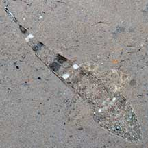
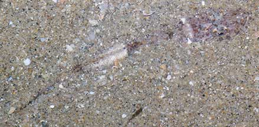
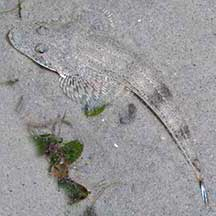
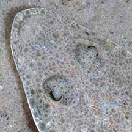
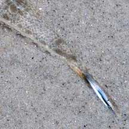
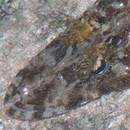
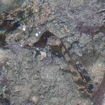

|
|
| fishes text index | photo index |
| Phylum Chordata > Subphylum Vertebrata > fishes |
| Flatheads Family Platycephalidae updated Oct 2020 Where seen? Like a cross between a crocodile and a fish, flatheads are often encountered on our shores. In coral rubble areas as well as sandy areas and seagrass meadows. Although large, flatheads are usually overlooked as they blend in with their surroundings and are sometimes half buried in the sand. What are flatheads? Flatheads belong to the Family Platychephalidae. According to FishBase: the family has 18 genera and 60 species. They are found in the Indo-Pacific oceans. Features: 6-25cm long. Some species can grow up to 1m long! The broad, flattened head gives rise to the family's scientific name: 'Platys' means flat and 'kephale' means head in Greek. The snout is long and mouth huge; with the lower jaw slightly longer than the upper jaw. The head has bony ridges and some species have spines. Some species have elaborate tentacles over the eyes. The long body is cylindrical and tapers towards the tail. Spending most of the time on the sea bottom, most species lack swim bladders. Sometimes mistaken for other flattened fishes that live on the sea bottom. Here's more on how to tell apart fishes with flat heads. Disappearing Act: Flatheads often lie buried in sandy or muddy bottoms, sometimes with only their eyes sticking out. Together with their camouflaged patterns, they are hard to detect. |
 East Coast, Nov 08 |
 Changi, Jun 07 |
| What do they eat? Flatheads eat
small fishes, octopus and cuttlefish, crustaceans and other animals
that live on the bottom. Their large, long mouths expand into a huge
funnel to suck up prey. They have vomerine teeth (bumps on the roof
of the mouth) to help grip and swallow prey. Human uses: Some large species of flatheads are considered good eating. They are caught by seining and trawling. The Bartail flathead (Platycephalus indicus) is commercially cultured in Japan for the table and is also used in Chinese traditional medicine. |
| Some Flatheads on Singapore shores |
 |
 |
 |
| Bartail flathead | No fringe or fleshy tentacles above the eyes. Instead, a large 'eyelid' that covers most of the eye, giving it a sleepy look. | Tail colourful. |
 |
 |
|
| Fringe-eyed flathead | An elaborate golden filigree fringe over the eyeball, and above the eyes several fleshy tentacles. | Tail not colourful. |

| Unidentified flatheads on Singapore shores |
| Photos of Unidentified flatheads for free download from wildsingapore flickr |
| Family
Platycephalidae recorded for Singapore from Wee Y.C. and Peter K. L. Ng. 1994. A First Look at Biodiversity in Singapore. *from Lim, Kelvin K. P. & Jeffrey K. Y. Low, 1998. A Guide to the Common Marine Fishes of Singapore. **from WORMS +Other additions (Singapore Biodiversity Records, etc)
|
Links
Other references
|